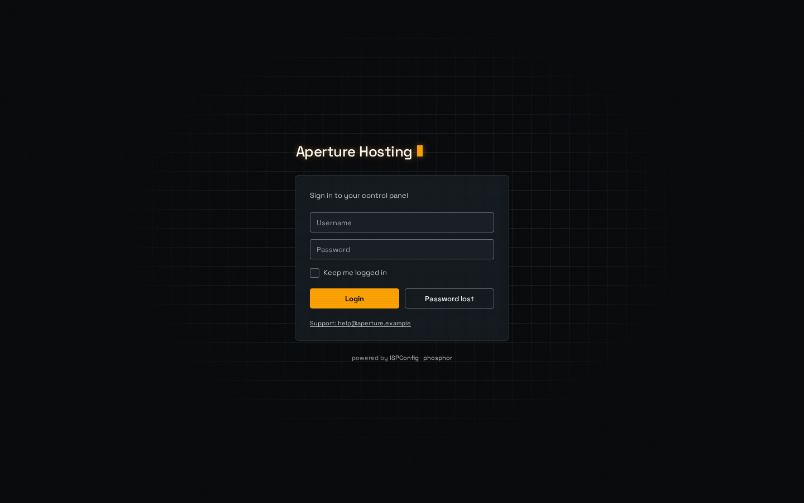
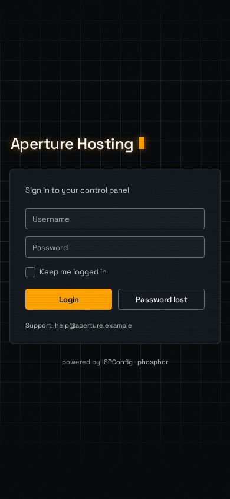
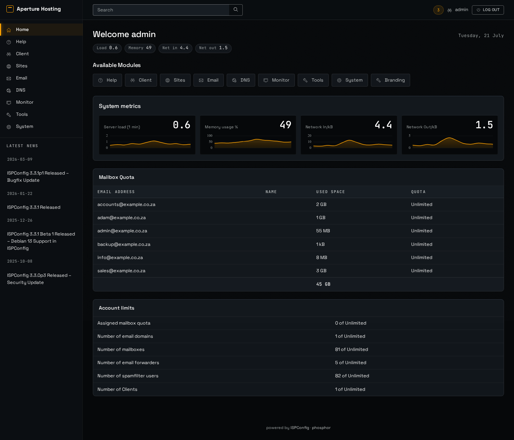
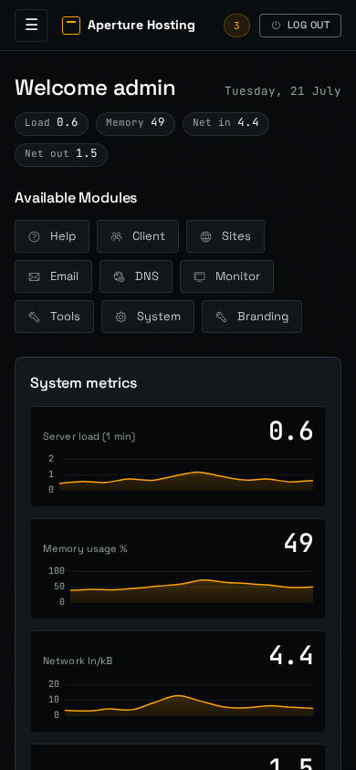
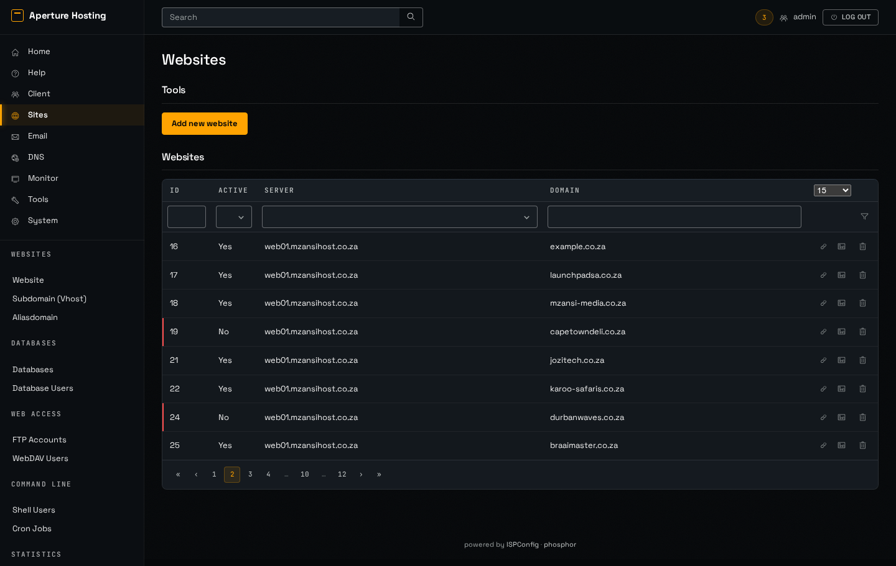
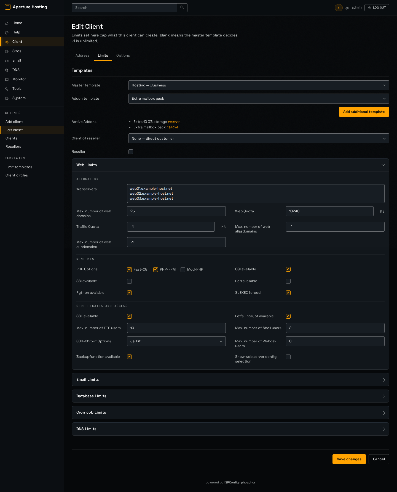
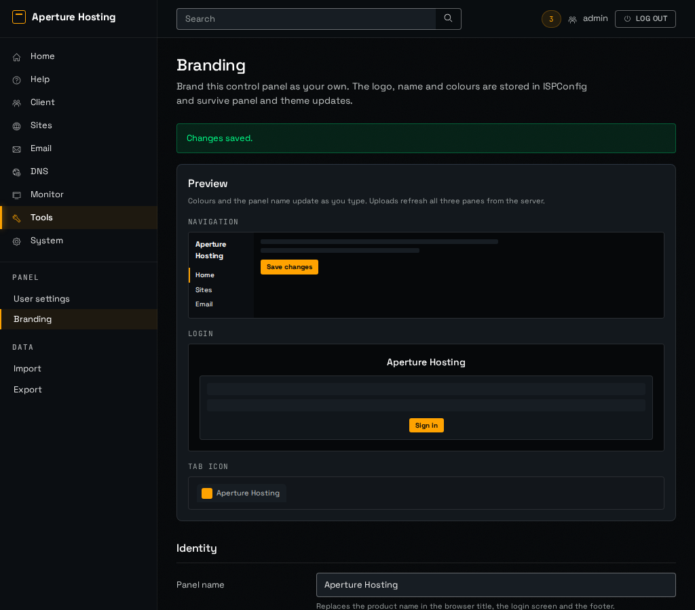
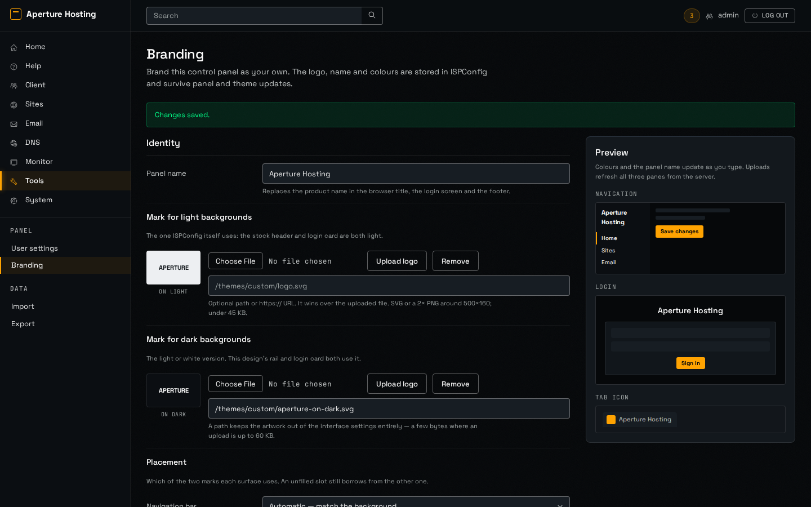
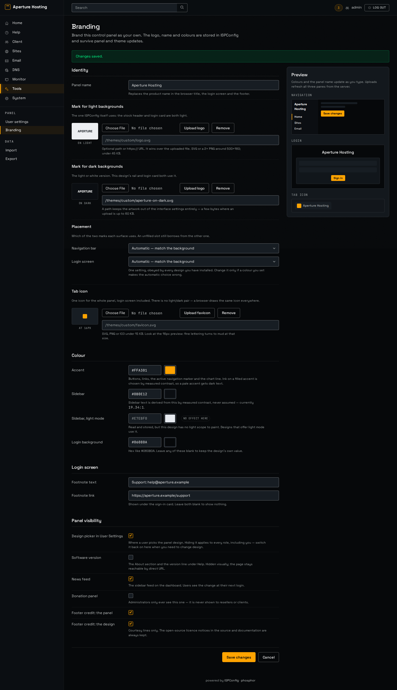

Five screens built to docs/superpowers/specs/2026-09-07-phosphor-design.md, on real ISPConfig page markup. Nothing is implemented in themes/; these are HTML files under mockup/phosphor/. Click a shot for the full-size PNG.

The one bold moment: a 34px terminal grid under a radial mask, one 384px glass card, the panel name with a blinking mono cursor. Two of the four glow allowances are spent here and nowhere else on the screen.
shots/phosphor-01-login-desktop.png
The card and the grid still read at 375px; the scene is unchanged, only narrower.
shots/phosphor-01-login-mobile.png
Glass over black at one depth. The metric tiles are opaque instruments recessed into the pane, not a second layer of glass; mono numerals against grotesk prose; the chart is themed dark with an amber line and no paper island.
shots/phosphor-02-dashboard-desktop.png
Rail collapses to the drawer toggle, tiles stack, the reading strip wraps.
shots/phosphor-02-dashboard-mobile.png
The table treatment: a glass wrapper, a raised header band in 11px mono caps, 8×12 cells at 13px, an amber row wash on hover, in-row actions demoted to borderless ink. The inactive site carries a danger rule, not a red panel.
shots/phosphor-03-sites-desktop.png
The cluttered form survives: a two-column grid inside each accordion panel at ≥1280px, section captions in the mono voice, recessed wells on the panel's own pane — glass is not stacked on glass.
shots/phosphor-04-client-limits-desktop.png
The single-column collapse: the preview moves above the fields rather than off the side.
shots/phosphor-05-branding-1024.png
Two columns with a sticky preview. Each uploader sits inline with its variant, previewed on the background that variant is for. Placement is a third block about the pair, not a property of either mark.
shots/phosphor-05-branding-desktop.png
All four groups: Identity, Colour, Login screen, Panel visibility. rail_hex_light is present, stored, and labelled a no-op on this design; show_design_picker leads the visibility group.
shots/phosphor-05-branding-full.png{kind=link}
{kind=link}
{kind=link}
{kind=link}
{kind=link}
{kind=link}
{kind=link}
{kind=link}
{kind=link}